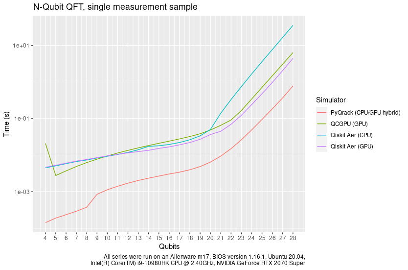

Because evolution is unitary.
Qrack and PyQrack join the Unitary Fund Organization
Daniel Strano
We announce with great pleasure and excitement that the quantum computer simulator libraries vm6502q/qrack and vm6502q/pyqrack have officially joined the Unitary Fund GitHub organization of open source quantum computing repositories! Get started with Qrack from the docs here.
Started by Daniel Strano (technical staff member of Unitary Fund) and Benn Bollay (CTO of Fusebit) in 2017 and winner of a Unitary Fund microgrant in 2019, Qrack is a quantum computer gate model simulator written in C++11. Qrack is intended to provide maximum performance and minimum memory footprint for quantum computing workloads run on “classical” computer hardware. PyQrack is Qrack’s dependency-free pure Python “ctypes” wrapper, to expose Qrack shared library binaries directly for just-in-time (JIT) execution via a Python interpreter. Plugins and providers are available for Qiskit, XACC, and even the Unity video game engine, with plans to expand plugin support to virtually every major quantum open source framework in the global ecosystem. Supported platforms include all available OEM combinations of x86_64, x86, ARMv7, and ARM64 instruction sets with Linux, Windows, Mac, iOS, and Android operating systems, as well as WebAssembly (Wasm).
Given Qrack’s support for Wasm, we’ve joked at the Unitary Fund that Qrack can theoretically run on literal internet-of-things enabled smart refrigerators, but open an issue ticket on the repository if we’re blowing smoke and you still need developer support for your smart fridge, seriously!
QFT Benchmark
A standard example of Qrack (and PyQrack) performance is the quantum Fourier transform (QFT). Comparative results from benchmarking are in the graph below and are available on Metriq (as single-valued exponential trendline slope comparisons). Historically, Qrack measures this benchmark with an initialization by random 3-parameter unitary single qubit gates across the register width for a fair comparison, because Qrack QFT performance on computational basis states is classically efficient because of the underlying Schmidt decomposition. That wouldn’t be representative of general demands for cases of the QFT. While Qrack would perform worse for a random fully entangled case, our choice of randomly initialized separable qubits generally become fully entangled by the end of the circuit, paying a representative performance penalty for potentially “composing” every initially separable qubit. Hence this has historically been deemed a “fair” benchmark by the Qrack team.
PyQrack has a commanding performance lead on this benchmark compared to other popular quantum computer simulators like Qiskit Aer (GPU) and QCGPU, where these three candidates are GPU-based simulators. Qiskit Aer (CPU) and Cirq (CPU) have been included on the chart, run on the same stock gaming laptop as the three GPU simulators, but remember that these software benchmarks are most fairly compared on identical hardware, whereas it isn’t possible for a CPU model and a GPU model to be the exact same hardware instance, obviously. However, PyQrack’s “hybrid CPU/GPU” methods utilize CPU simulation at the low qubit width end of the trend, which should be a fair comparison against CPU simulators until the user-selectable GPU switching threshold, which is 9 qubits in this case.
Qrack Architecture
Qrack is a collection of stacking and interchangeable optimization “layers,” which include OpenCL-based, scalable multi-device GPU, CPU, and GPU/CPU “hybrid” state vector simulation at base, “hybrid stabilizer” simulation with full and transparent recourse to state vector representation as fallback, an auxiliary “quantum binary decision tree” layer, and Schmidt decomposition techniques layered over stabilizer and state vector simulation for proactively and reactively identifying separable “cuts” in qubit subsystem representations to reduce memory footprint and improve execution speed. Floating point precision options available from source build include half, float, and double, with even limited support for quad math. By design, most users don’t need to worry about complicated custom configuration of the layers and settings at all; just instantiate a default C++11 “QInterface” or Python “QrackSimulator” class and go! The highly-optimized default layer stack will automatically leverage hybrid stabilizer simulation for a Clifford circuit or preamble, for example.

Check out the repositories on the Unitary Fund GitHub organization, “star” and share, and get Qrackin’! You rock!